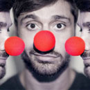

Название клиники возможно займёт две строки
- Адрес:
- Калужская область, Дзержинский р-н, д. Дворцы (25 км от Калуги)
- Сайт:
- shamarin-kaluga.ru
- Основная информация
-
Егорка родился летом 2010 года, когда в Москве была невыносимая жара и горели торфяники. Беременность начиналась замечательно, ничего не угрожало здоровью мамы и здоровью ребенка. Но, началось «аномальное» лето! 16 июля 2010 г.,на 25-й неделе беременности стало очень сильно повышаться у мамы давление и она попала в больницу на сохранение, температура на улице достигала +43С, ужасно было жарко, душно и улицы были заполнены дымом. Начинались роды, но врачи сделали всё возможное, чтобы остановить роды и сохранить ребенка ещё на месяц. В течении этого месяца, мама была в буквальном смысле слова, прикована к постели, нельзя было вставать, т.к., в любое время, могли начаться преждевременные роды.
Палаты и коридоры больницы, в которых она лежала, были наполнены смогом от горевших торфянников, во рту был постоянный привкус гари, мама Егорушки не снимала марлевые повязки с лица даже ночью, которые менялись каждые 2 часа, т.к., дольше в них дышать было невозможно. И так прошло 33 дня.
В 29 недель и 3 дня, родился мальчик весом 1кг.,270 гр., рост 37 см., это первый и долгожданный ребенок родителей. На 3-и сутки у малыша остановилось дыхание, случилось Апное, его перевели на ИВЛ, 10 дней ИВЛ, пневмония, 1 месяц в реанимации, ещё 1 месяц на втором этапе выхаживания. Два месяца врачи боролись за жизнь Егорки. И вот, их выписали! 12 октября 2010 г., вес ребенка был 2 килограмма, рост 42 см.
Угроза ДЦП переросла в диагноз, с 2-х месяцев они борятся за выздоровление Егорки,2 раза проходили лечение в №18 психо-неврологической больнице г. Москвы, лежали в НИИ Педиатрии, посещают остеопата каждый месяц, делают постоянно массаж и ЛФК на дому, есть результаты, но очень маленькие, но они есть! Сделали в апреле 2013 г. Операцию по Ульзибату, ослабли приводящие мышцы, которые сильно находили в спастике. Были в реабилитационном центре у Шамарина, Калужская обл., Егорушку поставили на четвереньки и закрепили, у них очень сильный ЛФК и множество других-разных процедур.
Сейчас необходимо съездить на реабилитацию в Самару, в реабилитационный центр «Пойду сам».
В интеллектуальном плане ребенок не отстаёт от сверстников, первые слова стал произносить в 1 год, очень любознательный, любит играть, рассматривать книжки, слушать песенки, пытается рисовать. Сидит с поддержкой, стоит на четвереньках, ползает по пластунски. Ручками хорошо владеет, пытается сам кушать и рисовать. Мальчик очень перспективный, многие врачи отмечают это, у которых мы были на консультации. Егорка совсем не ходит, сильная спастика не даёт ему это сделать, опора есть на ножки, но незначительная. Нужны постоянные реабилитации, чтобы Егорка мог самостоятельно ходить на ножках и был полноценным человеком.
- Медиа
-
Пример многословного заголовка для аудио
Анонс новости. Краткое описание или вступительный абзац. Краткое описание или вступительный абзац. Краткое описание. Анонс новости.
Пример многословного заголовка для аудиоАнонс новости. Краткое описание или вступительный абзац. Краткое описание или вступительный абзац. Краткое описание. Анонс новости.
- Новости
-
 Заголовок новости
Анонс новости. Краткое описание или вступительный абзац. Краткое описание или вступительный абзац. Краткое описание или вступительный абзац. Краткое описание или вступительный абзац. Краткое описание или вступительный абзац.
 Пример многословного и многострочного заголовка новости
Пример многословного и многострочного заголовка новости
Анонс новости. Краткое описание или вступительный абзац. Краткое описание или вступительный абзац. Краткое описание. Анонс новости.